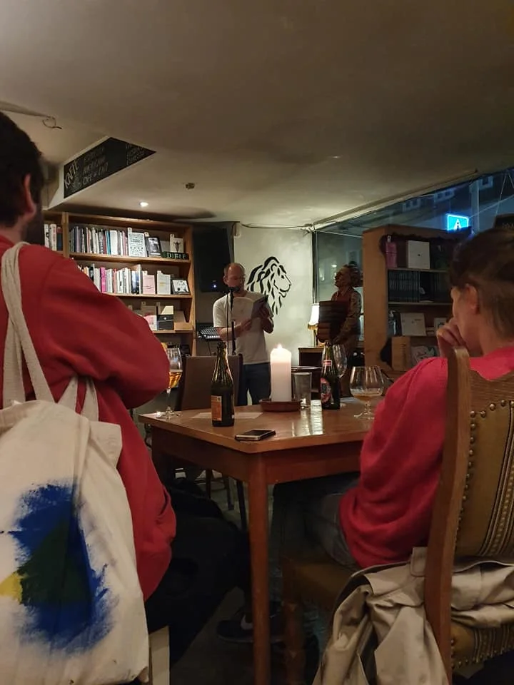
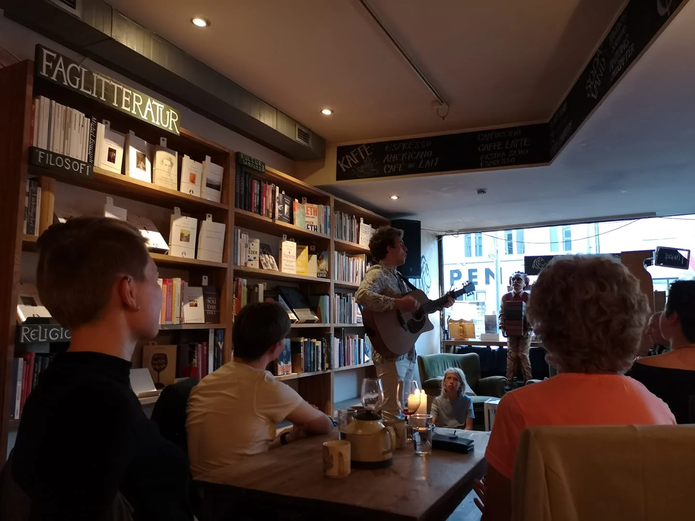

Løve's BogKlub
Løve's Bogklub er et uforpligtende forum, hvor vi mødes den 2. tirsdag i hver måned klokken 19 og snakker om en udvalgt bog. Formålet er at samles om litteratur og vende nogle af de tanker, bøger skaber under og efter læsningen.
Valget af bøger foretages i fællesskab og kan købes i bogcafeen. Du kan tilmelde dig til Bogklubben ved at skrive en mail til aa-cafe@loeves.dk med dit navn og e-mailadresse eller komme ned i Bogcaféen og blive skrevet op. Og som sagt er det ganske uforpligtende at være med. Du kan bare troppe op til de møder, du syntes lyder interessante.
9. April
Y Aarhus Poetry Club

Y Aarhus Poetry Club er en klub for poeter, musikere, historiefortællere, dansere og mange andre poetiske folk.
Den 3. onsdag i måneden kl. 19:30 gæster Y Aarhus Poetry Club Løve's, så kig forbi og læs dine digte op!
Kunstnere, musikanter, poeter og danserinder kommer langvejs fra for at optræde på vores scene, men der er også plads til dig!
10. April
24. April
Åben Poetisk Scene

Åben Poetisk Scene er som navnet antyder en åben scene, hvor kreative ordgøglere, kvistværelsespoeter - eller kort sagt: skrivende af alle slags! - kan komme og prøve deres ting af, få dem ud over scenen, op fra skrivebordsskuffen og fremført for et publikum. Og nysgerrige kan komme og få sig en god oplevelse som publikum.
Åben Poetisk Scene arrangeres af Poetklub Århus og har kørt i mange år forskellige steder i Århus, men har nu fundet et fast sted i Løve's Bog- og Vincafé, der i forvejen står for flere litterære og kulturelle arrangementer; det samme gør Poetklub Århus jo - så på den måde er det et godt match.
Arrangementet afholdes d. 2. og 4. onsdag i hver måned fra kl. 19.30-21.30, hvorefter baren fortsætter til midnat.
17. April